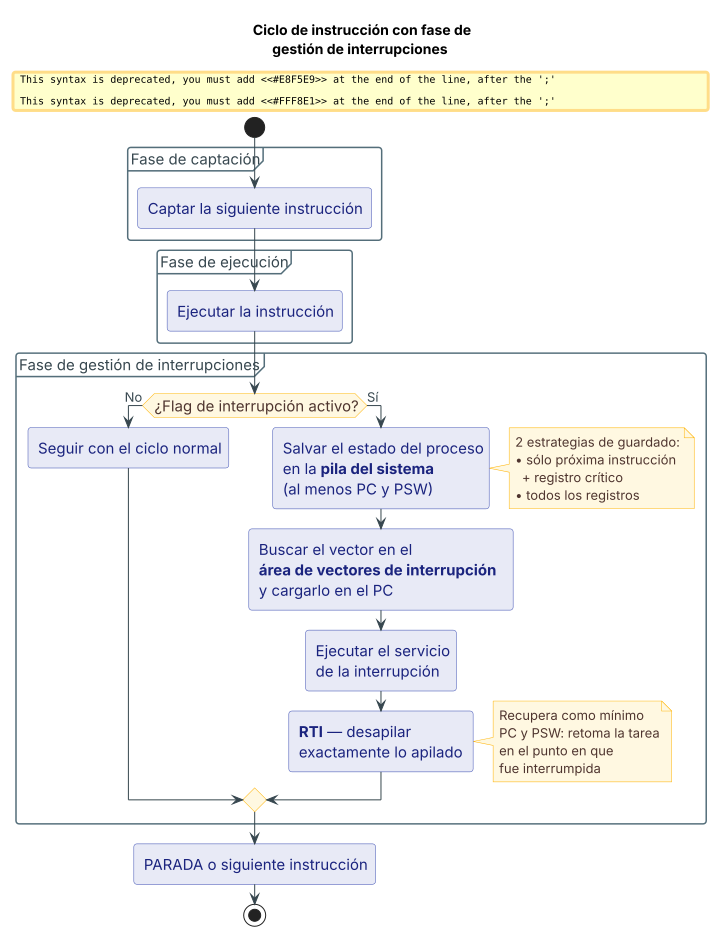
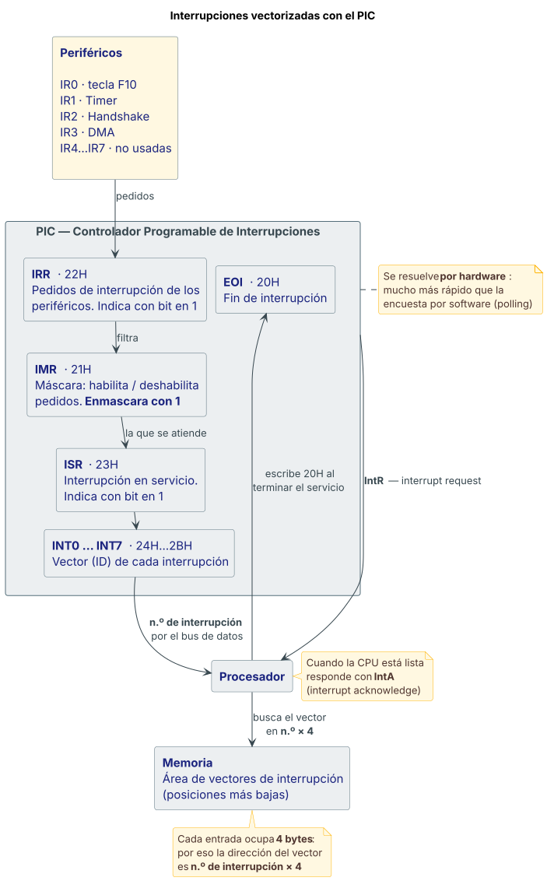

Interrupciones¶
Definición¶
En condiciones "normales" la CPU lee y ejecuta una instrucción a continuación de la otra de manera ininterrumpida (el "bucle interno del ciclo de instrucción").
Una interrupción es un mecanismo que permite alterar ese proceso de "ejecución normal" de la CPU. Permite que la CPU suspenda la tarea que está haciendo y responda a una solicitud de atención para resolver (ejecutar) otra tarea —el servicio de la interrupción—. Una vez completado el servicio, el procesador retoma la tarea suspendida en el punto donde se detuvo, de una manera similar al llamado a subrutina.
El procesador conmuta de una tarea en ejecución a otra por efecto de la presencia de un evento. Por lo tanto se requieren 3 acciones:
- Detener (suspender) la tarea que está ejecutando el procesador —suspender, no terminar ni abortar—.
- Bifurcar (saltar) a otra tarea asociada a la solicitud de interrupción (el servicio de interrupción).
- Restablecer la tarea suspendida en las condiciones en las que se encontraba en el momento en que se la detuvo.
Fuente: Teorías/02 Arq clase2 Interrupciones.pdf, fil. 3–4.
Desarrollo¶
Operación de una interrupción, paso a paso¶
- La CPU recibe, mientras está ejecutando una tarea, un pedido de interrupción.
- La CPU salva todo o parte del estado de la CPU correspondiente a la tarea a ser suspendida. Al menos salva el Contador de Programa (PC) y el registro de estado (PSW), típicamente en la pila del sistema. Lo hace porque los necesita para restaurar la tarea suspendida.
- La CPU busca, en un área de memoria definida, la dirección de comienzo (el "vector") del servicio de la interrupción, y comienza a ejecutar dicho servicio.
- Cuando termina el servicio tiene que retornar al programa interrumpido, mediante una instrucción especial de Retorno de Interrupción (RTI).
- La ejecución de RTI desapila exactamente lo apilado cuando atendió la interrupción. Como mínimo recupera el PC y el PSW, y así retoma la tarea suspendida en el punto en que fue interrumpida.
Origen de las interrupciones¶
El origen de una interrupción es la ocurrencia de un evento que requiere la intervención de la CPU. Existen 2 tipos de eventos:
| Tipo | Descripción | Ejemplos |
|---|---|---|
| Interno | Situación producida dentro del sistema de cómputo | error asociado a la ejecución de una instrucción, desbordamiento aritmético (overflow), división por cero, temporizados propios del sistema, fallo del hardware, error de paridad en la memoria, pérdida de energía |
| Externo | Asociado a operaciones de E/S con periféricos | finalización de una transferencia, error en la transferencia, dispositivo indisponible |
Clasificación de las interrupciones¶
Según se puedan ignorar o no —principalmente asociado a la prioridad que tienen—:
- No enmascarables: no pueden ser ignoradas, se atienden indefectiblemente. Están asociadas a eventos críticos, peligrosos o de alta prioridad.
- Enmascarables: pueden ser eventualmente "ignoradas". El procesador permite realizar algunas acciones que inhiben su atención. Generalmente están asociadas a operaciones menos críticas, por ejemplo de E/S.
Según la forma en que se invocan:
- Por hardware: generadas por señales físicas asociadas a eventos externos o
internos.
- Externas (interrupt request). El origen proviene típicamente de dispositivos conectados al subsistema de E/S. Se consideran las "verdaderas" interrupciones porque son aleatorias en relación al proceso en ejecución: pueden ocurrir en cualquier instante de tiempo. El sistema tiene que ser capaz de manejar estos eventos externos "no planeados" o asincrónicos. Pueden o no estar relacionadas con el proceso en ejecución en ese momento.
- Internas (trap o excepciones). Son señales creadas dentro del sistema de cómputo en respuesta a situaciones propias del proceso en ejecución y no vinculadas con operaciones de E/S; por tal motivo no son estrictamente aleatorias. Eventos que producen un trap: condiciones excepcionales (overflow en la ALU de punto flotante), fallas de programa (tratar de ejecutar una instrucción no definida), fallas de hardware (error de paridad de memoria), accesos no alineados o a zonas de memoria protegidas.
- Por software (software interrupt): son instrucciones explícitas con efecto similar a una interrupción por hardware. Como normalmente el SO administra los servicios de las interrupciones, permiten invocar los servicios del SO asociados a ellas —en otras palabras, son "llamadas" a funciones del SO—. El SO define los lugares donde se cargan los servicios; el usuario no conoce a priori esos lugares, pero los usa invocándolos a través de las interrupciones que maneja el SO.
Por qué hacen falta las interrupciones por software
Hay sistemas que no permiten hacer una llamada directa a una función del SO por estar en una zona reservada. Sin este mecanismo, cuando se necesita administrar una tarea por interrupción habría que: (1) escribir el servicio uno mismo —bastante complicado—, o (2) buscar entre todas las llamadas a funciones del BIOS y el SO la que se necesita y reemplazar en el código la dirección de esa función invocada —también muy complicado—.
Interrupciones múltiples y prioridades¶
La necesidad de administrar eventos de distinto origen requiere, en la mayor parte de los casos, administrar varias interrupciones. Dado su origen diverso, hay algunas más importantes que otras: las más importantes deben tener mayor prioridad. Cuanto mayor sea su prioridad, mayor es la urgencia para ser atendida, incluso si hay una interrupción en curso.
Se procesan en el orden en que llegan.
- Cuando llega una interrupción y es atendida, se inhabilita el resto de las interrupciones de igual o menor nivel de prioridad.
- Si llega una nueva interrupción, quedará pendiente.
- El procesador ejecuta el servicio de la interrupción atendida.
- Al finalizar el servicio se habilitan nuevamente las interrupciones.
- La interrupción pendiente será atendida.
Las de mayor prioridad pueden interrumpir a las de menor prioridad. La inversa no vale.
- Una interrupción de prioridad más alta puede interrumpir en cualquier momento a una de prioridad menor.
- Cuando se ha gestionado la de prioridad más alta, el procesador vuelve a las interrupciones previas (de menor prioridad).
- Terminadas todas las rutinas de gestión de interrupciones, se retoma el programa del usuario.
Tratamiento: las 7 acciones de la gestión¶
El uso de interrupciones requiere la gestión ordenada de estas acciones básicas:
- Detectar el pedido de interrupción.
- Detener la tarea que se estaba ejecutando.
- Salvar el estado de la tarea que se estaba ejecutando.
- Obtener la dirección de comienzo del servicio de la interrupción y bifurcar a dicho servicio.
- Ejecutar el servicio de la interrupción.
- Retornar y restaurar el estado en que estaba la tarea interrumpida.
- Continuar con la ejecución normal de la tarea interrumpida, en el punto en el que se detuvo.
1. Detección del pedido: la fase de interrupción del ciclo de instrucción¶
El procesador examina la presencia de interrupciones en cada ciclo de instrucción. El ciclo de instrucción, que podía interpretarse como un bucle de ejecución interna, infinito, compuesto por 2 fases —captación de la instrucción y ejecución—, se modifica agregando una tercera: la fase de gestión de interrupciones, que determina la presencia o ausencia de pedido.
La presencia de un pedido se manifiesta mediante una o más señales discretas (bits) comúnmente llamadas bandera o flag, que la CPU examina. El estado de estos flags asociados a interrupciones está en algún registro especial de la CPU. Dependiendo del estado 0 o 1 del flag se tienen 2 posibles caminos.
2. Almacenamiento del proceso a ser interrumpido¶
- Si no hay pedido pendiente (flag inactivo), se inicia el ciclo de captación de la siguiente instrucción (proceso "normal" de ejecución).
- Si hay algún pedido pendiente, el procesador guarda en la pila del sistema
el "estado del proceso". Existen 2 estrategias de guardado:
- Guardar sólo la próxima instrucción a ejecutar y algún registro crítico (por ejemplo el registro de estado).
- Guardar todos los registros del procesador.
El objetivo de esta operación es restablecer el estado del procesador al terminar el servicio de la interrupción.
3. Bifurcación al servicio de la interrupción¶
Obtiene la dirección donde comienza la rutina de la interrupción y carga el PC con este valor, bifurcando así al servicio. En general se dispone de un área de memoria reservada donde están estas direcciones —son varias, porque el procesador es capaz de atender varias interrupciones y habrá una dirección por interrupción—. Esa área se llama área de vectores de interrupción.
Identificación del origen con múltiples fuentes¶
Cuando hay múltiples fuentes de interrupción hay varias formas de identificar el origen del pedido. Las más comunes:
| Opción | Mecanismo | Características |
|---|---|---|
| 1 | 1 señal física de entrada a la CPU por cada interrupción | Cada dispositivo que puede provocar interrupción tiene una entrada física conectada directamente a la CPU. Implementación bastante sencilla. Disponer de líneas en la CPU es costoso, así que la cantidad se acota normalmente a un número reducido (por ejemplo 3 o 4). Restringida por la cantidad de líneas disponibles. |
| 2 | 1 única señal física para todas + identificación por software | La CPU debe "preguntar" a cada dispositivo si produjo el pedido: método de encuesta o polling. Es básicamente un programa que ejecuta la CPU dentro de los servicios de interrupción. Al ser detección por software, consultar uno por uno a todos los dispositivos lo hace relativamente lento e ineficiente. |
| 3 | 1 única señal física para todas + identificación por hardware | La CPU recibe a continuación, típicamente a través del bus de datos, un número que identifica la fuente: el vector de la interrupción. El vector lo provee el periférico que generó el pedido, o algún dispositivo que se ocupe de generarlo según la interrupción a ser atendida. |
El PIC — Controlador Programable de Interrupciones¶
La opción 3 se conoce como interrupciones vectorizadas. El escenario es:
- El procesador tiene una única entrada de pedido de interrupciones.
- Hay varios "productores" de interrupciones.
- Un dispositivo especial administra las necesidades propias de la interrupción. En la familia Intel se conoce como Controlador Programable de Interrupciones (PIC). Se encarga, entre otras cosas, de generar el vector, administrar prioridades y habilitar interrupciones.
Diálogo PIC ↔ CPU:
- El PIC recibe los pedidos de interrupción, típicamente de periféricos que piden atención.
- El PIC solicita atención a la CPU con la única señal de pedido de interrupción IntR (interrupt request).
- Cuando la CPU está lista para atender la interrupción, le avisa al PIC mediante la señal IntA (interrupt acknowledge).
- El PIC genera en el bus de datos el número de la interrupción (vector) a ser atendida. La CPU lee ese número y busca en la memoria el vector correspondiente al servicio de esa interrupción.
Dado que se hace por hardware, es mucho más rápido.
Registros internos del PIC —tiene 3 principales—:
| Registro | Función |
|---|---|
| ISR | Identifica la interrupción en servicio. Indica con bit en 1. |
| IRR | Contiene los pedidos de interrupción provenientes de los periféricos. Indica con bit en 1. |
| IMR | Se usa para habilitar/deshabilitar los pedidos de interrupción. Enmascara con 1. Esta funcionalidad se conoce como enmascaramiento de interrupciones. |
Además tiene los registros INT0…INT7, con el vector de cada interrupción.
Fuente: Teorías/02 Arq clase2 Interrupciones.pdf, fil. 6–7, 8–20, 21–31, 32–36, 43.
Diagrama¶
Ciclo de instrucción con la fase de gestión de interrupciones¶

Estructura y conexionado del PIC¶

Fuente: Teorías/02 Arq clase2 Interrupciones.pdf, fil. 22–23, 26–27 (ciclo) y fil. 33–36, 43–45 (PIC), más Prácticas/Practica 3 - Interrupciones por Hardware - Resolución - AC25.pdf, p. 1–2 (funciones y direcciones de los registros).
Ventajas y desventajas o comparaciones¶
Las 3 opciones para identificar el origen del pedido¶
| Opción 1 — línea por interrupción | Opción 2 — polling | Opción 3 — vectorizada (PIC) | |
|---|---|---|---|
| Líneas en la CPU | Una por dispositivo | Una sola | Una sola |
| Identificación | Implícita en la línea | Por software | Por hardware |
| Ventaja | Implementación bastante sencilla | No consume líneas de CPU | Mucho más rápido; el PIC además genera el vector, administra prioridades y habilita interrupciones |
| Desventaja | Costoso; restringido a un número reducido de líneas (por ejemplo 3 o 4) | Relativamente lento e ineficiente: hay que consultar uno por uno | Requiere hardware adicional (el PIC) |
Interrupciones por hardware externas vs. internas (trap)¶
| Externas (interrupt request) | Internas (trap / excepción) | |
|---|---|---|
| Origen | Dispositivos conectados al subsistema de E/S | Situaciones propias del proceso en ejecución |
| Vínculo con E/S | Sí | No |
| Momento de ocurrencia | Aleatorias, asincrónicas: en cualquier instante de tiempo | No estrictamente aleatorias |
| Relación con el proceso en ejecución | Pueden o no estar relacionadas | Propias del proceso |
Enmascarables vs. no enmascarables¶
| Enmascarables | No enmascarables | |
|---|---|---|
| ¿Se pueden ignorar? | Sí, el procesador puede inhibir su atención | No, se atienden indefectiblemente |
| Asociadas a | Operaciones menos críticas, por ejemplo de E/S | Eventos críticos, peligrosos o de alta prioridad |
| En el 8086 | INTR (con flag IF asociado) | NMI |
Interrupción vs. llamado a subrutina¶
El retorno del servicio retoma la tarea suspendida en el punto donde se detuvo, de una manera similar al llamado a subrutina. La diferencia la marca la instrucción de retorno: IRET es similar a RET por utilizar la pila, pero recupera además una copia del registro de estado junto con la dirección de retorno. En el MSX88, IRET extrae 6 bytes de la pila: 4 para la dirección de retorno y 2 para el registro de estado.
Fuente: Teorías/02 Arq clase2 Interrupciones.pdf, fil. 3, 15, 17, 19, 28–34, 37 y Teorías/2 anexo clase 02 ejer_int_en _MSX88.pdf, fil. 14.
Ejemplo del curso¶
Interrupciones del i8086¶
- 2 interrupciones por hardware: INTR (enmascarable, con flag IF asociado que determina si va a ser atendida o no) y NMI (no enmascarable).
- El procesador dispone de una señal de reconocimiento de interrupción INTA.
- 1 instrucción de interrupción por software:
INT n, con n entre 0 y 255. - Instrucción de retorno de interrupción: IRET.
- 2 banderas relacionadas con las interrupciones:
- IF — habilita/deshabilita la INTR (si IF = 0 no se atiende la INTR).
- TF — habilita/deshabilita el modo trace (single-step), mecanismo implementado mediante una interrupción —la interrupción de trace— que habilita a la CPU a ejecutar de a 1 instrucción por vez.
- El esquema de manejo es vectorizado. El área de memoria donde están los vectores está en las posiciones más bajas de memoria (normalmente tipo RAM): 0000–03FF (= 1024 bytes).
- En total hay 256 vectores, identificados como 0 a 255 (00–FFH), correspondientes a 256 interrupciones distintas. Cada vector ocupa 4 bytes: 2 para el registro de segmento de código (CS) y 2 para el Contador de Programa (IP).
Interrupciones del MSX88¶
El procesador usado en el simulador MSX88 es una versión simplificada del 8086, por lo que presenta algunas diferencias respecto de la CPU verdadera.
- Por hardware: línea INT (enmascarable) con su línea de reconocimiento INTA, y línea NMI (no enmascarable).
- Por software: instrucción
INT xx, retorno de interrupciónIRET. - Los vectores están en la parte más baja de la memoria. Cada entrada es una
palabra doble (4 bytes) que contiene la dirección del procedimiento que
brinda el servicio; la parte alta del vector es 0 (ej.
0000yyyy, dondeyyyyes la dirección lógica/física).
Vectores preasignados del MSX88:
| Tipo | Servicio |
|---|---|
| 0 | Finaliza ejecución de programa |
| 3 | Punto de parada para depuración/seguimiento |
| 6 | Lectura de entrada estándar. Requiere el uso de BX |
| 7 | Escritura de salida estándar. Requiere BX y AL |
Interrupciones de hardware preasignadas del MSX88:
| Línea | Fuente |
|---|---|
| INT0 | Tecla F10 — produce una interrupción cada vez que se presiona F10 |
| INT1 | Timer — conectada a la salida del Timer |
| INT2 | Handshake — conectada a una salida para handshake |
| INT3 | DMA — conectada a la salida del puerto a impresora |
| INT4 a INT7 | No usadas |
Registros del PIC en el MSX88. Se sitúan a partir de la dirección 20H del
espacio de direcciones de E/S y se acceden con operaciones de lectura y escritura
en el espacio de E/S, es decir con las instrucciones IN y OUT:
| Dirección | Registro |
|---|---|
| 20H | EOI |
| 21H | IMR |
| 22H | IRR |
| 23H | ISR |
| 24H | INT0 |
| … | … |
| 2BH | INT7 |
Conceptos del ejercicio de la tecla F10
Aunque el final no toma assembly, el ejercicio del anexo explica conceptos que sí se preguntan:
- Instalar el vector.
ORG 40ubica la interrupción en el lugar 10 de la tabla de vectores: como cada entrada ocupa 4 bytes, la dirección es 4 × 10 = 40. Ahí va la dirección de la primera instrucción del servicio. - Enmascarar. Cargar FEh en el IMR pone el bit 0 en 0 y los restantes bits en 1, enmascarando todas las interrupciones menos la INT0, que corresponde a la tecla F10. Recordar que el IMR enmascara con 1.
- Cargar el vector en el PIC. Se escribe en el registro INT0 del PIC —dirección 24H, es decir PIC+4— el valor de la posición en la tabla de vectores; en ese registro se buscará dicha posición para la interrupción producida por F10.
- STI y CLI activan y desactivan interrupciones. Cuando se activa la bandera I, permite que por el terminal INT del procesador "ingresen" interrupciones; cuando se desactiva el bit, se ignoran los cambios en el terminal INT.
- EOI. La CPU debe indicarle al controlador PIC la culminación del
servicio de cada interrupción de hardware. Por lo tanto, al final de la
rutina de servicio se escribe en el registro de comandos EOI un comando
(número) que indique ese final de atención. La dirección del registro
coincide con el valor a escribir (
OUT 20H, 20H).
El Timer del MSX88 posee dos registros de 8 bits: COMP —registro de comparación que determina el módulo de la cuenta— y CONT —registro contador, que muestra la cuenta de los pulsos de la señal aplicada a la entrada del periférico—. Cuando el valor de CONT coincide con el de COMP provoca una señal de salida. Direcciones de registros 10H y 11H, frecuencia 1 Hz.
Fuente: Teorías/02 Arq clase2 Interrupciones.pdf, fil. 37–45 y Teorías/2 anexo clase 02 ejer_int_en _MSX88.pdf, fil. 7–15.
La Práctica 3 — interrupciones por hardware con el PIC¶
La Práctica 3 resuelta trabaja los mismos conceptos sobre el simulador VonSim. Sus objetivos: comprender la utilidad de las interrupciones por hardware y el funcionamiento del PIC; utilizar el TIMER, F10 y el dispositivo de handshaking mediante interrupciones.
Función de cada registro del PIC, con ejemplos¶
| Dir. | Registro | Función | Ejemplo y qué significa |
|---|---|---|---|
20h |
EOI | Fin de Interrupción. Sólo para escribir: se debe mandar el comando de fin de interrupción cuando se terminó de servir la interrupción (valor 20h) |
No aplica |
21h |
IMR | Registro de Máscara de Interrupciones. Permite enmascarar selectivamente las interrupciones que va a recibir el PIC. Cada bit representa una línea | 1111 1101 → está habilitada la INT1 (bit 1 en 0), conectada al Timer |
23h |
ISR | Registro de Interrupción en Servicio. El bit que representa la línea que se está atendiendo estará en 1 (bit 0 ↔ INT0 … bit 7 ↔ INT7), el resto en 0. Si no hay interrupciones atendiéndose, todos los bits valen 0 | 0000 0100 → la CPU está ejecutando el manejador de INT2, conectada al HandShake |
24h |
INT0 | ID de Línea INT0. Almacena el ID de la interrupción asociada al dispositivo F10 para buscar en el vector de interrupciones la dirección de comienzo de la subrutina que lo atiende | 15 → es el número de vector que se le enviará a la CPU. Multiplicado por 4 (15 × 4 = 60) da la dirección de memoria donde debe estar la dirección de la rutina |
25h |
INT1 | Ídem, para el Timer | 10 → 10 × 4 = 40 |
26h |
INT2 | Ídem, para el Handshake | 25 → 25 × 4 = 100 |
La regla del ×4
El ID que se carga en el registro INTn del PIC no es una dirección: es el
número de vector. La dirección donde está la rutina se obtiene
multiplicando por 4, porque cada entrada de la tabla de vectores ocupa 4
bytes. Es el mismo cálculo del ORG 40 del anexo (4 × 10).
Cómo se enmascara: la tabla de configuración¶
La práctica hace configurar el IMR para distintas combinaciones de dispositivos. Recordar que el IMR enmascara con 1 (0 = habilitada):
| Dispositivos habilitados | IMR |
|---|---|
| F10 (INT0) | 1111 1110 |
| Timer (INT1) | 1111 1101 |
| Handshake (INT2) | 1111 1011 |
| Sin interrupciones | 1111 1111 |
| F10 y Timer | 1111 1100 |
| Timer y Handshake | 1111 1001 |
| F10, Timer y Handshake | 1111 1000 |
Las preguntas conceptuales del contador de pulsaciones¶
¿Qué hacen CLI y STI, y qué pasaría sin ellas?
CLI inhibe las interrupciones enmascarables; STI las vuelve a habilitar. Las interrupciones enmascarables son las gestionadas por el PIC.
Si no están mientras configuramos el PIC, la CPU podría recibir un pedido de interrupción de un vector que aún no está configurado —en ese caso el registro INT0—; eso podría hacer que la CPU busque la rutina manejadora en la dirección equivocada y se termine ejecutando código en otra dirección de memoria.
¿Por qué el valor 0FEH? Para configurar el IMR y habilitar solamente la
interrupción de F10.
¿Qué le indica al PIC que la interrupción terminó? Escribir el valor 20h en
el registro EOI.
Fuente: Prácticas/Practica 3 - Interrupciones por Hardware - Resolución - AC25.pdf, p. 1–4.
Preguntas de final sobre este tema¶
:material-help-box: Ver el banco de preguntas de interrupciones
Fuentes citadas¶
Teorías/02 Arq clase2 Interrupciones.pdf— 46 filminas. Fuente primaria del tema.Teorías/2 anexo clase 02 ejer_int_en _MSX88.pdf— 15 filminas. Ejercicios de práctica y detalles del simulador MSX88.Prácticas/Practica 3 - Interrupciones por Hardware - Resolución - AC25.pdf— p. 1–4. Función de cada registro del PIC con ejemplos, tabla de configuración del IMR y las preguntas conceptuales sobre CLI/STI y EOI.
Referencias que da la propia cátedra (fil. 46): William Stallings, capítulo 3; MSX88, Manual de usuario. Lectura recomendada: "Interrupciones en la arquitectura INTEL IA32", Blázquez, J.M., 2004.